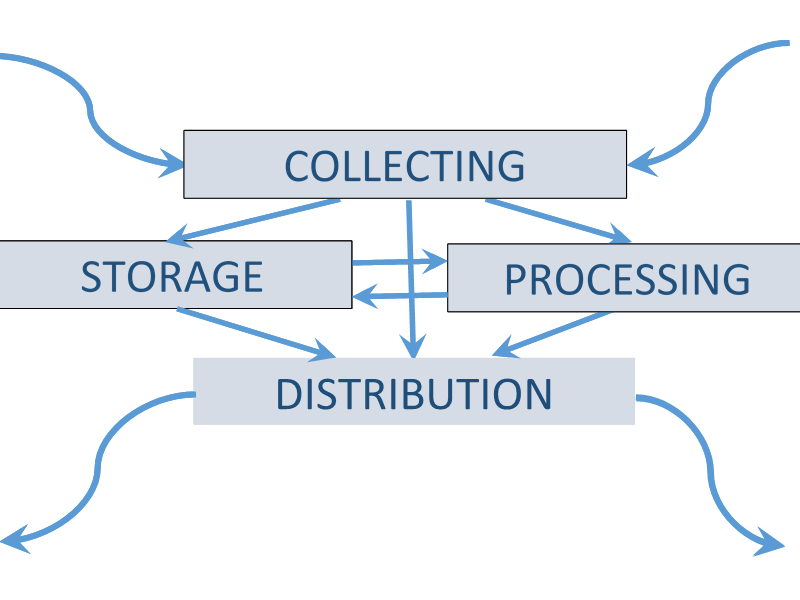
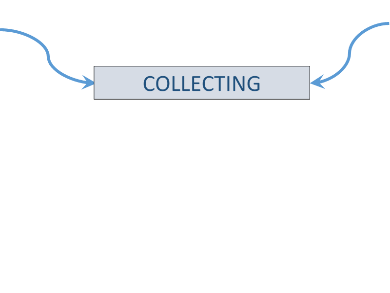
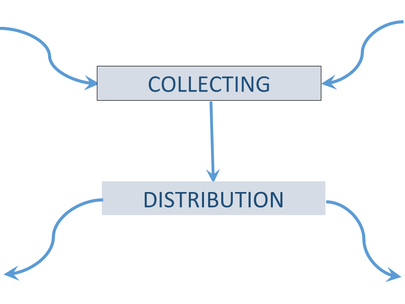
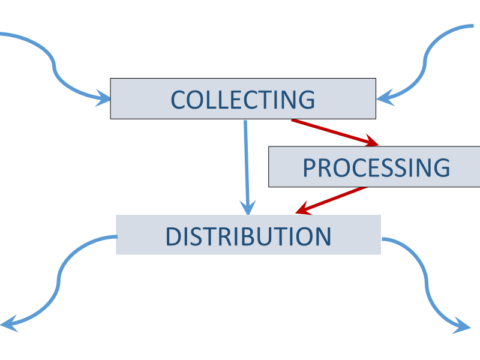
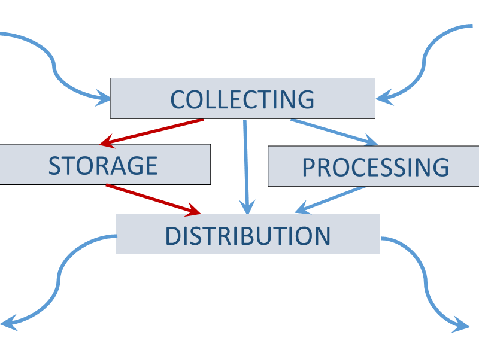
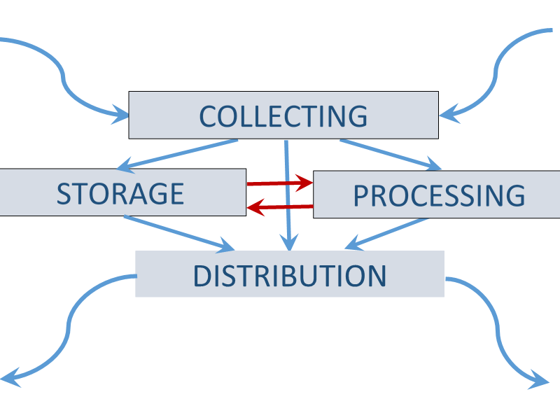
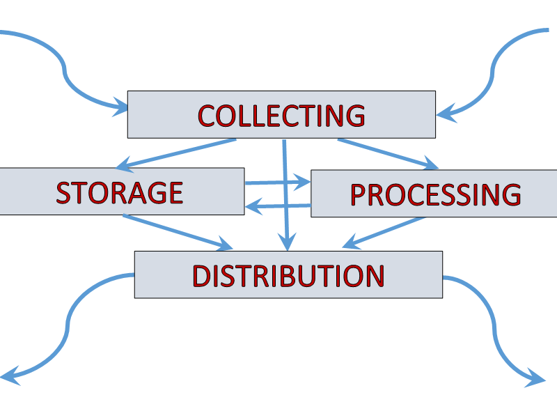

Informatics subject
INFORMATION?
- information is a measure of uncertainty
- thus reducing uncertainty
- you can not beat without information

information collecting

in the beginning was the Word
- Wherefore is collecting?
- Who is collecting?
- How to collect?

information distribution activity
Communication channels
- Media, news, internet,
classroom, family, storage devices etc.
- Channel types:
- Asynchronous channels
- Synchronous channels

collecting, processing and distributing activities
Unreliable communication channels
- Claude Elwood Shannon
- A Mathematical Theory of Cryptography
- The information entropy is a measure for the uncertainty in a message.
- Intelligence

information storage
Storage types:
- Library, DB, etc.
- Legends, songs, myths, ...
- Brain
- websites, ...

information processing and storing
Analysis and Decision Making
- education
- marketing
- science
- FOREX, ...

Subject of science informatics.
Informatics studies the basic information activities and processes.

Lesson "eSkills for jobs".
The lesson plan details are here.